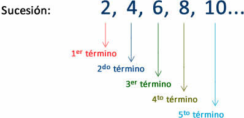

Definición de las sucesiones
caso 1
En este caso se desea encontrar un valor que el usuario en el ultimo recuadro debe digitar y para generar este procedimiento se necesita el valor inicial de la sucesión, el valor que le sigue al inicial y cual valor es el que desea encontrar (Ubicación). Después de hacer esto se hace una operatividad interna y en los recuadros de abajo se muestra el valor que el usuario pidio y en el recuadro de la derecha se muestra la formula que se necesita para poder hallarlo.

caso 2
En este caso se desea encontrar el valor inicial de la sucesion y para generar este procedimiento se necesita un valor cualquiera, la diferencia que hay entre los valores de la sucesión y cual valor es el que desea encontrar. Después de hacer esto se hace una operatividad interna y en los recuadros de abajo se muestra el valor inicial de la sucesión y en el recuadro de la derecha se muestra la formula que se necesita para poder hallarlo.
caso 3
En este caso se desea encontrar la diferencia que hay entre los valores de la sucesion y para generar este procedimiento se necesita un valor cualquiera, el valor inicial y cual valor es el que desea encontrar (Ubicación) . Después de hacer esto se hace una operatividad interna y en los recuadros de abajo se muestra el valor inicial de la sucesión y en el recuadro de la derecha se muestra la formula que se necesita para poder hallarlo
Regresar